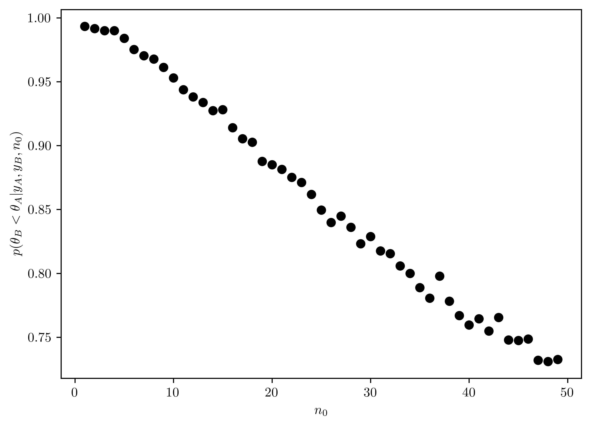
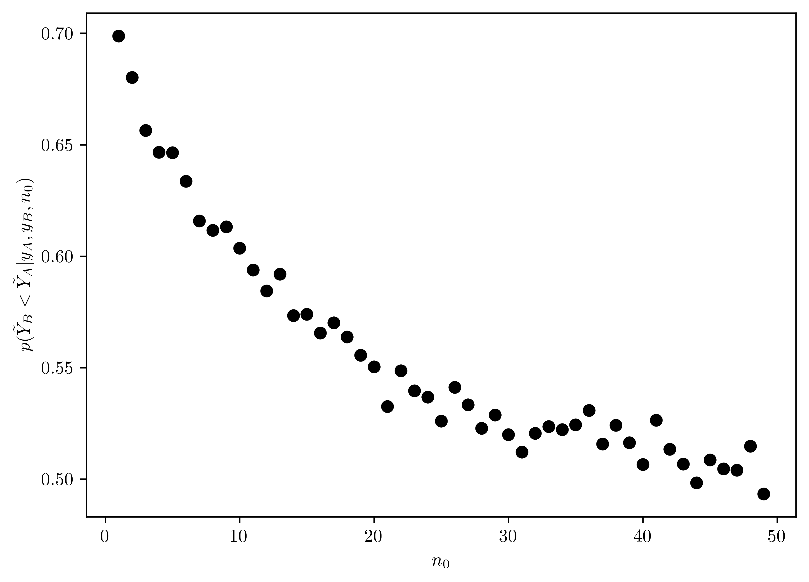
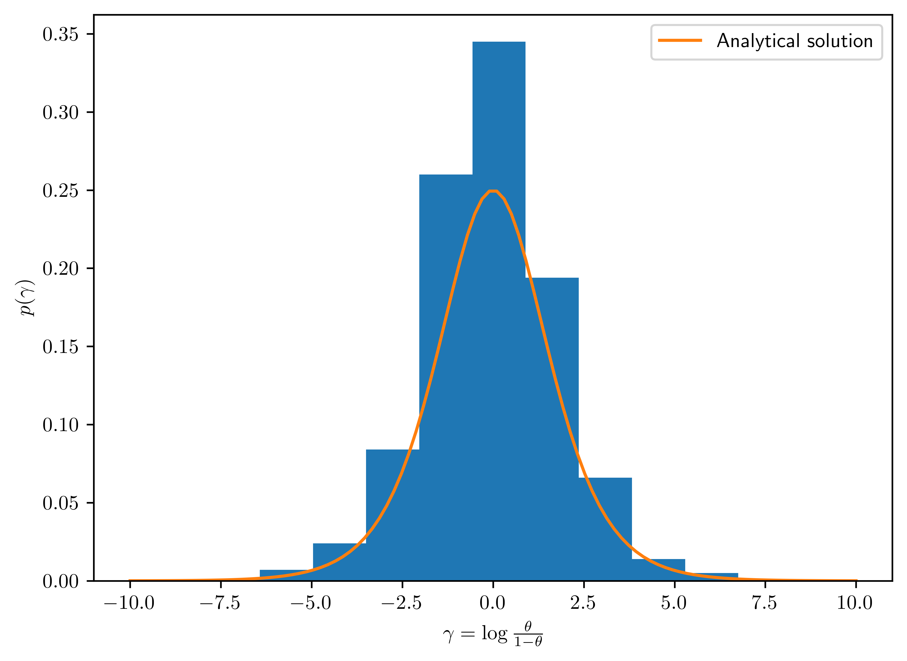
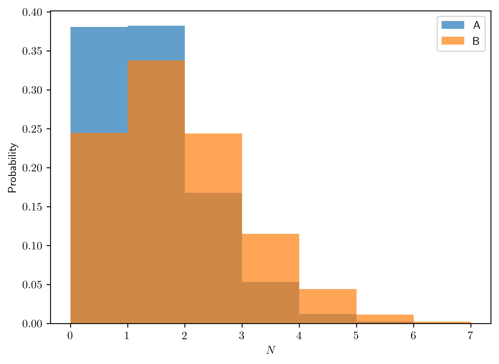
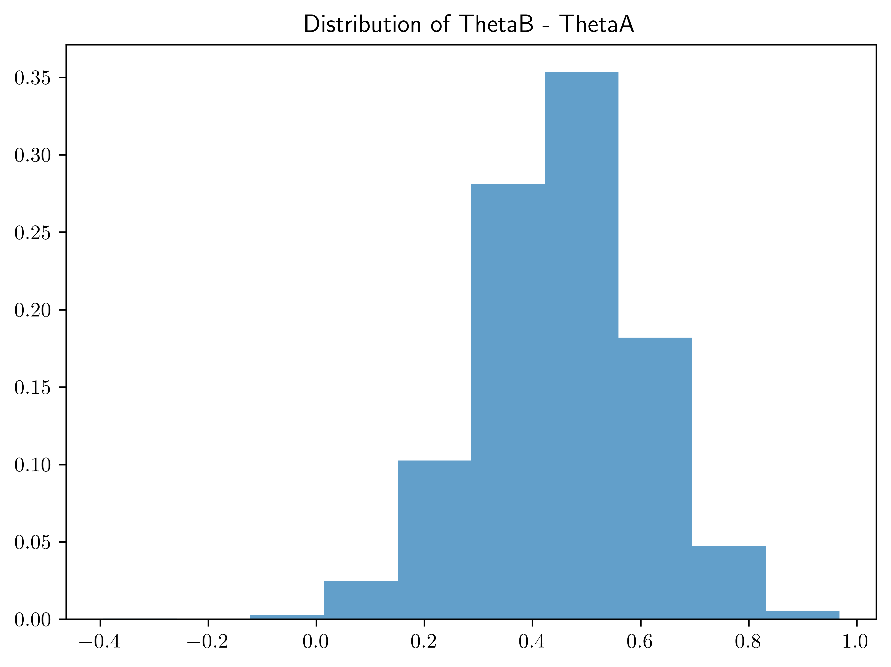
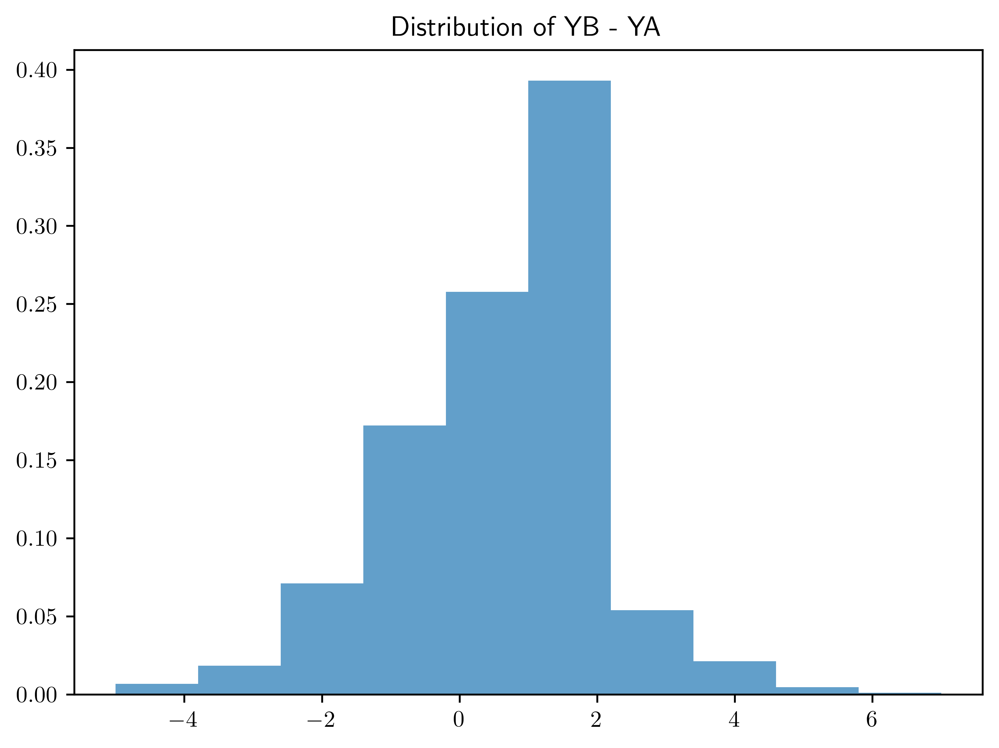
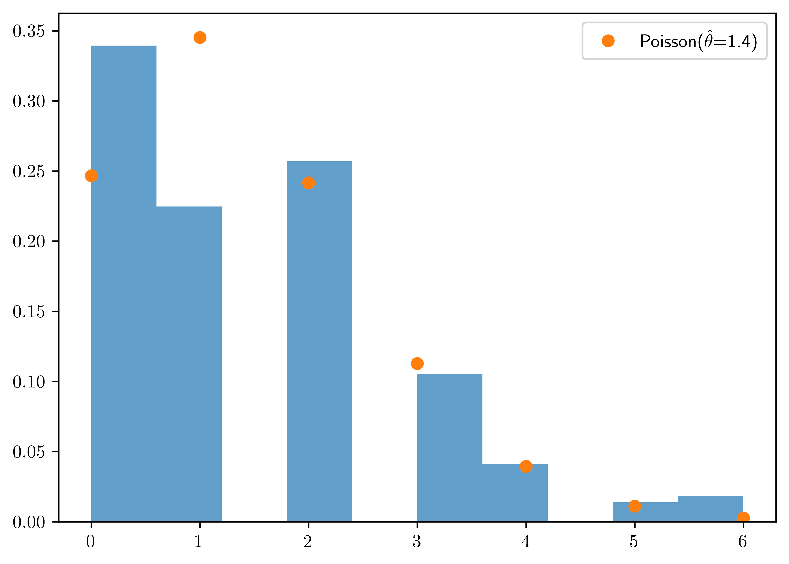
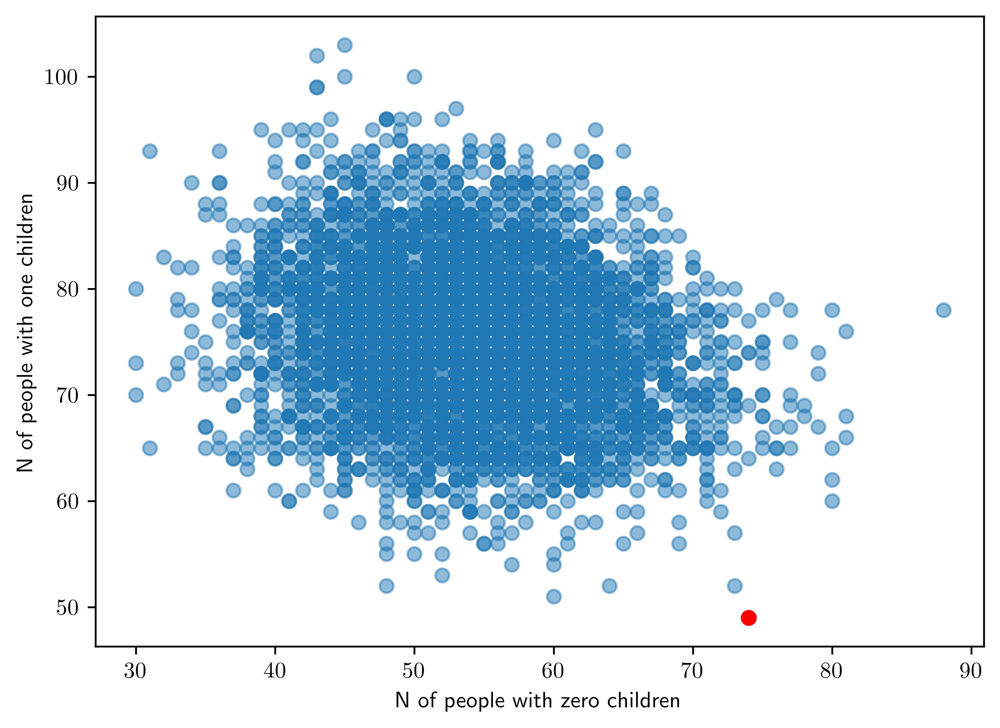

%matplotlib inline
import sys # system information
import matplotlib # plotting
import scipy # scientific computing
import random
import pandas as pd # data managing
from scipy.special import comb
from scipy import stats as st
from scipy.special import gamma
import numpy as np
import matplotlib.pyplot as plt
# Matplotlib setting
plt.rcParams['text.usetex'] = True
matplotlib.rcParams['figure.dpi']= 300
np.random.seed(20220928) # Consistent random effect8 Homework 4
8.1 Description
- Course: STAT638, 2022 Fall
Read Chapter 4 in Hoff.
Then, do the following exercises in Hoff: 4.1, 4.2, 4.6, 4.8
All datasets in the Hoff book can be downloaded from https://pdhoff.github.io/book/ (Links to an external site.).
- Deadline:
Oct 4 by 12:01pm
8.2 Computational Enviromnent Setup
8.2.1 Third-party libraries
8.2.2 Version
print(sys.version)
print(matplotlib.__version__)
print(scipy.__version__)
print(np.__version__)
print(pd.__version__)3.9.12 (main, Apr 5 2022, 01:52:34)
[Clang 12.0.0 ]
3.6.2
1.9.3
1.23.4
1.5.18.3 Problem 4.1
Posterior comparisons: Reconsider the sample survey in Exercise 3.1. Suppose you are interested in comparing the rate of support in that county to the rate in another county. Suppose that a survey of sample size \(50\) was done in the second county, and the total number of people in the sample who supported the policy was \(30\). Identify the posterior distribution of \(\theta_2\) assuming a uniform prior. Sample \(5000\) values of each of \(\theta_1\) and \(\theta_2\) from their posterior distributions and estimate \(Pr(\theta_1 < \theta_2|\text{ the data and prior })\).
- Prior:
- \(\theta \sim beta(1,1)\)
- Model:
- \(p(\sum Y =n | \theta) = {N \choose n}\theta^{n}(1-\theta)^{N-n}\)
- Posterior distribution (Hoff 2009, 580:37):
- \(\theta | \sum_{i=1}^{N} Y_i=n \sim Beta(beta(1+n, 1+N-n))\)
- \(\theta_1 \sim Beta(1+57, 1+100-57) = Beta(58, 44)\)
- \(\theta_2 \sim Beta(1+30, 1+50-30) = Beta(31, 21)\)
- \(\theta | \sum_{i=1}^{N} Y_i=n \sim Beta(beta(1+n, 1+N-n))\)
N = 5000
t1s = st.beta.rvs(58, 44, size=N)
t2s = st.beta.rvs(31, 21, size=N)
p_t2bigger = np.mean(t1s < t2s)
# Display
pd.DataFrame({"Item": ["Pr(theta_1 < theta_2 | the data and prior)"],\
"Value":[p_t2bigger]})| Item | Value | |
|---|---|---|
| 0 | Pr(theta_1 < theta_2 | the data and prior) | 0.6292 |
8.4 Problem 4.2
Tumor count comparisons: Reconsider the tumor count data in Exercise 3.3:
8.4.1 (a)
For the prior distribution given in part (a) of that exercise, obtain \(Pr(\theta_B < \theta_A | y_A, y_B)\) via Monte Carlo sampling.
- Prior distribution
- \(\theta_A|y_A \sim gamma(120+117, 10+10) = gamma(237, 20)\)
- \(\theta_B|y_B \sim gamma(12+113, 1+13) = gamma(125, 14)\)
N = 5000
theta_A = st.gamma.rvs(237, scale=1/20, size=N)
theta_B = st.gamma.rvs(125, scale=1/14, size=N)
res = np.mean(theta_B < theta_A)
# Display
pd.DataFrame({"Item": ["Pr(theta_B < theta_A | y_A, y_B)"],\
"Value":[res]})| Item | Value | |
|---|---|---|
| 0 | Pr(theta_B < theta_A | y_A, y_B) | 0.995 |
8.4.2 (b)
For a range of values of \(n_0\), obtain \(Pr(\theta_B < \theta_A |y_A, y_B)\) for \(\theta_A \sim gamma(120,10)\) and \(\theta_B \sim gamma(12\times n_0, n_0)\). Describe how sensitive the conclusions about the event \(\{\theta_B < \theta_A\}\) are to the prior distribution on \(\theta_B\).
In Figure 8.1, the \(n_0\) decreases the probability of \(p(\{\theta_B < \theta_A\})\) with linear effect. From small to large \(n_0\), the prior distribution of \(\theta_B\) keep influences the result.
def get_A_bigger(n0, N=5000):
theta_A = st.gamma.rvs(120 + 117, scale=1/(10+10), size=N)
theta_B = st.gamma.rvs(12*n0+113, scale=1/(n0+13), size=N)
res = np.mean(theta_B < theta_A)
return res
n0s = np.arange(1,50, 1)
ress = [get_A_bigger(n0) for n0 in n0s]
# Plotting
fig, ax = plt.subplots()
ax.plot(n0s, ress, "o", color="k")
ax.set_xlabel("$n_0$")
ax.set_ylabel("$p(\\theta_B < \\theta_A | y_A, y_B, n_0)$");
8.4.3 (c)
Repeat part (a) and (b), replacing the event \(\{\theta_B < \theta_A\}\) with the event \(\{\tilde{Y}_{B} < \tilde{Y}_{A}\}\), where \(\tilde{Y}_A\) and \(\tilde{Y}_B\) are samples from the posterior predictive distribution.
Part I (a)
\(\tilde{Y}_A \sim nbinom(a+\sum Y^{(A)}, b + n) = nbinom(120+117,10+10)= nbinom(237, 20)\)
\(\tilde{Y}_B \sim nbinom(a+\sum Y^{(B)}, b + n) = nbinom(12+113, 1+13) = nbinom(125, 14)\)
Find \(p(\tilde{Y}_{B} < \tilde{Y}_A | y_A, y_B)\)
Use
scipy.stats.nbinom1- \(p = 1 - \frac{1}{b+n+1}\)
- \(n = a+\sum Y\)
- \(k = \tilde{Y}\)
N = 5000
tilde_y_A = st.nbinom.rvs(120+117, 1 - 1/(10+10+1), size=N)
tilde_y_B = st.nbinom.rvs(12+113, 1 - 1/(1+13+1), size=N)
p2 = np.mean(tilde_y_B < tilde_y_A)
# Display
# Display
pd.DataFrame({"Item": ["Pr(tildeY_B < tildeY_A | y_A, y_B)"],\
"Value":[p2]})| Item | Value | |
|---|---|---|
| 0 | Pr(tildeY_B < tildeY_A | y_A, y_B) | 0.6934 |
Part II (b)
In Figure 8.2, the \(n_0\) has nonlinear negative effect on the probability \(p(\{\tilde{Y}_{B} < \tilde{Y}_{A}\})\) with the prior formation of \(n_0\).
def get_A_bigger(n0, N=5000):
tilde_y_A = st.nbinom.rvs(120+117, 1 - 1/(10+10+1), size=N)
tilde_y_B = st.nbinom.rvs(12*n0+113, 1 - 1/(n0+13+1), size=N)
res = np.mean(tilde_y_B < tilde_y_A)
return res
n0s = np.arange(1,50, 1)
ress = [get_A_bigger(n0) for n0 in n0s]
# Plotting
fig, ax = plt.subplots()
ax.plot(n0s, ress, "o", color="k")
ax.set_xlabel("$n_0$")
ax.set_ylabel("$p(\\tilde{Y}_B < \\tilde{Y}_A | y_A, y_B, n_0)$");
8.5 Problem 4.6
Non-informative prior distributions: Suppose for a binary sampling problem we plan on using a uniform, or \(beta(1,1)\), prior for the population proportion \(\theta\). Perhaps our reasoning is that this represents “no prior information about \(\theta\).” However, some people like to look at proportions on the log-odds scale, that is, they are interested in \(\gamma = \log\frac{\theta}{1−\theta}\). Via Monte Carlo sampling or otherwise, find the prior distribution for \(\gamma\) that is induced by the uniform prior for \(\theta\). Is the prior informative about \(\gamma\)?
Part I: Analytical Approach
- \(\gamma = g(\theta) = \log\frac{\theta}{1-\theta}\)
- \(\theta = g^{-1}(\gamma) = \frac{e^{\gamma}}{1+e^{\gamma}}\)
\[\begin{align} p_{\gamma}(\gamma) &= \underbrace{p_{\theta}(g^{-1}(\gamma))}_{=1 \because \theta\sim uniform(0,1)} \times \left|\frac{dg^{-1}(\gamma)}{d\gamma}\right|\\ &= \left|\frac{e^{\gamma}}{(1+e^{\gamma})^2}\right| \end{align}\]
Part II: Monte Carlo Approach
def true_gamma_pdf(y):
return np.absolute(np.exp(y)/(1+np.exp(y))**2)
ths = st.beta.rvs(1,1,size=1000)
gammas = np.linspace(-10,10,100)
ys_true = [true_gamma_pdf(g) for g in gammas]
ys = [np.log(th/(1-th)) for th in ths]
fig, ax = plt.subplots();
ax.hist(ys, weights=np.ones_like(ys)/len(ys));
ax.plot(gammas, ys_true, label="Analytical solution");
ax.set_xlabel("$\\gamma=\\log\\frac{\\theta}{1-\\theta}$")
ax.set_ylabel("$p(\\gamma)$")
ax.legend();
- The prior of \(\gamma\) is informative since it is centered around the \(0\).
8.6 Problem 4.8
More posterior predictive checks: Let \(\theta_A\) and \(\theta_B\) be the average number of children of men in their 30s with and without bachelor’s degrees, respectively.
8.6.1 (a)
Using a Poisson sampling model, a \(gamma(2,1)\) prior for each \(\theta\) and the data in the files
menchild30bach.datandmenchild30nobach.dat, obtain \(5000\) samples of \(\bar{Y}_{A}\) and \(\bar{Y}_{B}\) from the posterior predictive distribution of the two samples. Plot the Monte Carlo approximations to these two posterior predictive distributions. (data available in Appendix)
# Data
dataA = np.loadtxt("data/menchild30bach.dat")
dataB = np.loadtxt("data/menchild30nobach.dat")
# Display
pd.DataFrame({
"Properties": ["Sum", "N (number of samples)"],
"A": [np.sum(dataA), len(dataA)],
"B": [np.sum(dataB), len(dataB)]
})| Properties | A | B | |
|---|---|---|---|
| 0 | Sum | 54.0 | 305.0 |
| 1 | N (number of samples) | 58.0 | 218.0 |
The predictive distribution is
- \(\bar{Y_A} | y_A \sim nbinom(2+54,1+58)\)
- \(\bar{Y_B} | y_B \sim nbinom(2+305, 1+218)\)
N = 5000
bar_ya = st.nbinom.rvs(2+ np.sum(dataA), 1 - 1/(1+len(dataA)+1), size=N)
bar_yb = st.nbinom.rvs(2+ np.sum(dataB), 1 - 1/(1+len(dataB)+1), size=N)
# Display
fig, ax = plt.subplots();
[ax.hist(ys, weights=np.ones_like(ys)/len(ys), label=n, alpha=0.7, bins=np.arange(0,8,1)) for n,ys in zip(["A","B"],[bar_ya, bar_yb])]
ax.set_xlabel("$N$")
ax.set_ylabel("Probability")
ax.legend();
8.6.2 (b)
Find \(95\%\) quantile-based posterior confidence intervals for \(\theta_B - \theta_A\) and \(\tilde{Y}_B-\tilde{Y}_A\). Describe in words the differences between the two populations using these quantities and the plots in (a), along with any other results that may of interest to you.
\(\theta_A | y_A \sim gamma(2+54, 1+58)\)
\(\theta_B | y_B \sim gamma(2+58, 1+218)\)
\(\bar{Y_A} | y_A \sim nbinom(2+54,1+58)\)
\(\bar{Y_B} | y_B \sim nbinom(2+305, 1+218)\)
The \(95\%\) confidence interval does not contain the negative region. Thus, the belief of \(\theta_B > \theta_A\) is confident.
However, there is more uncertainty about the posterior predictive distribution, leading to the uncertain quantity comparison between \(Y_A\) and \(Y_B\).
N = 5000
thetaAs = st.gamma.rvs(2+np.sum(dataA), scale=1/(1+len(dataA)), size=N)
thetaBs = st.gamma.rvs(2+np.sum(dataB), scale=1/(1+len(dataB)), size=N)
YAs = st.nbinom.rvs(2+np.sum(dataA), 1 - 1/(1+len(dataA)+1), size=N)
YBs = st.nbinom.rvs(2+np.sum(dataB), 1 - 1/(1+len(dataB)+1), size=N)
theta_diff = thetaBs - thetaAs
Y_diff = YBs - YAs
theta_quan = st.mstats.mquantiles(theta_diff, prob=[0.025, 0.975])
Y_quan = st.mstats.mquantiles(Y_diff, prob=[0.025, 0.975])
# Display
pd.DataFrame({"RVs":["Interval (thetaB-thetaA)", "Interval (YB-YA)"],\
"Value (2.5%; 97.5%)":[theta_quan, Y_quan]})| RVs | Value (2.5%; 97.5%) | |
|---|---|---|
| 0 | Interval (thetaB-thetaA) | [0.14120795305853456, 0.7436235075695707] |
| 1 | Interval (YB-YA) | [-3.0, 4.0] |
plt.hist(theta_diff, weights=np.ones_like(theta_diff)/len(theta_diff), alpha=0.7)
plt.title("Distribution of ThetaB - ThetaA")
plt.show();
plt.hist(Y_diff, weights=np.ones_like(Y_diff)/len(Y_diff), alpha=0.7)
plt.title("Distribution of YB - YA")
plt.show();
8.6.3 (c)
Obtain the empirical distribution of the data in group \(B\). Compare this to the Poisson distribution with mean \(\hat{\theta}=1.4\). Do you think the Poisson model is a good fit? Why or Why not?
- \(\bar{Y}_B | y_B \sim nbinom(307, 219)\)
- The poisson model is not a good fit to the group \(B\). As shown in the historgram, there are more than one peak in the distribution, that is not the characteristic of Poisson distribution.
xs = np.arange(0,7,1)
ps = [st.poisson.pmf(x, 1.4) for x in xs]
fig, ax = plt.subplots()
ax.hist(dataB, weights=np.ones_like(dataB)/len(dataB), alpha=0.7);
ax.plot(xs, ps, "o", label="Poisson($\\hat{\\theta}$=1.4)")
ax.legend();
8.6.4 (d)
For each of the \(5000\) \(\theta_B\)-valeus you sampled, sample \(n_B=218\) Poisson random variables and count the number of \(0\)s and the number of \(1\)s in each of the \(5000\) simulated datasets. You should now have tow sequences of length \(5000\) each, one sequence counting the number of people having zero children for each of the \(5000\) posterior predictive datasets, the other counting the number of people with one child. Plot the two sequences against one another (one on the \(x\)-axis, one on the \(y\)-axis). Add to the plot a point marking how many people in the observed dataset had zero children and one child. Using this plot, describe the adequency of the Poisson model.
thetaBs = thetaBs
nB = 218
ybs0 = np.zeros(len(thetaBs))
ybs1 = np.zeros(len(thetaBs))
for (i, th) in enumerate(thetaBs):
seq = st.poisson.rvs(th, size=nB)
ybs0[i] = len(seq[seq==0])
ybs1[i] = len(seq[seq==1])
fig, ax = plt.subplots()
ax.plot(ybs0, ybs1, "o", alpha=0.5)
ax.plot(len(dataB[dataB==0]), len(dataB[dataB==1]), 'o',color="r")
ax.set_xlabel("N of people with zero children")
ax.set_ylabel("N of people with one children")Text(0, 0.5, 'N of people with one children')
- The observed data is in red, but the simulated data is centralized far from that point. Thus, the poisson model is not appropriate for this dataset.
8.7 Appendix
8.7.1 Data set in Problem 4.8
print("menchild30bach.dat:\n", dataA)
print("menchild30nobach.dat:\n", dataB)menchild30bach.dat:
[1. 0. 0. 1. 2. 2. 1. 5. 2. 0. 0. 0. 0. 0. 0. 1. 1. 1. 0. 0. 0. 1. 1. 2.
1. 3. 2. 0. 0. 3. 0. 0. 0. 2. 1. 0. 2. 1. 0. 0. 1. 3. 0. 1. 1. 0. 2. 0.
0. 2. 2. 1. 3. 0. 0. 0. 1. 1.]
menchild30nobach.dat:
[2. 2. 1. 1. 2. 2. 1. 2. 1. 0. 2. 1. 1. 2. 0. 2. 2. 0. 2. 1. 0. 0. 3. 6.
1. 6. 4. 0. 3. 2. 0. 1. 0. 0. 0. 3. 0. 0. 0. 0. 0. 1. 0. 4. 2. 1. 0. 0.
1. 0. 3. 2. 5. 0. 1. 1. 2. 1. 2. 1. 2. 0. 0. 0. 2. 1. 0. 2. 0. 2. 4. 1.
1. 1. 2. 0. 1. 1. 1. 1. 0. 2. 3. 2. 0. 2. 1. 3. 1. 3. 2. 2. 3. 2. 0. 0.
0. 1. 0. 0. 0. 1. 2. 0. 3. 3. 0. 1. 2. 2. 2. 0. 6. 0. 0. 0. 2. 0. 1. 1.
1. 3. 3. 2. 1. 1. 0. 1. 0. 0. 2. 0. 2. 0. 1. 0. 2. 0. 0. 2. 2. 4. 1. 2.
3. 2. 0. 0. 0. 1. 0. 0. 1. 5. 2. 1. 3. 2. 0. 2. 1. 1. 3. 0. 5. 0. 0. 2.
4. 3. 4. 0. 0. 0. 0. 0. 0. 2. 2. 0. 0. 2. 0. 0. 1. 1. 0. 2. 1. 3. 3. 2.
2. 0. 0. 2. 3. 2. 4. 3. 3. 4. 0. 3. 0. 1. 0. 1. 2. 3. 4. 1. 2. 6. 2. 1.
2. 2.]https://docs.scipy.org/doc/scipy/reference/generated/scipy.stats.nbinom.html#scipy.stats.nbinom↩︎